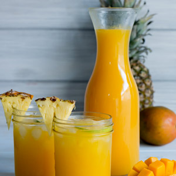
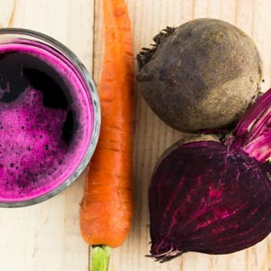

Guava Lava
A refreshing blend of guava, pineapple, mango, lemon, and strawberry that will fire you up with once sip.

Watermelon Crisp
The perfect drink for a hot summer day, a simple juice made from fresh watermelon blended with fresh squeezed limes, strawberry and crisp mint.
Orange Delight
A juice of all that is orange with a little extra. Mix of oranges, carrots, mangoes, lemon, and a little pinch of cayenne pepper for a spicy twist.
Black Plunge
This juice is perfect if you are looking to help clean up your lower intestine and aren't afraid of the charcoal black elixir. Made from lemons, oranges, pineapple, ginger and activated charcoal.
Full Garden
The greens of the menu, straight from the garden to you, freshly juiced. Working with apple, cucumber, kale, celery, lemon.
Daddy Quench
The juice scientifically crafted to quench your the thirst of a man lost in the desert. Created from a combination of watermelon, mango, kiwi, strawberry, and coconut water.
OJ Remix
The is not your average OJ, this juice is so good you might have to put it on trial. A delicious concoction of oranges, tangerines, lemon, pineaggle, and a little bit of ginger.